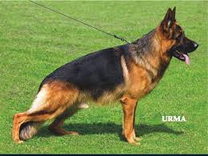

These are just but sample pics of this awesome, magnificent and eye catching work of creation. Want more of his pics? Click here to see more of him
>>>>>>> 701753b4ff14e3d44cdf9f7ad2b16c5228205f37For the past one week, I have been able to do some projects. Below are the links to the projects
I am Daniel Kipkosgei. I was born in Kabarnet. I am the first born in my family I currently live in Eldoret, Uasin Gishu

My pet is a dog. He is a German shepherd and his name is Kenzing. He is trained to sniff guard, guide and track. He is a loyal and faithful companion and you definitely will fall in love with him
I began my academic journey in University of Eldoret Nursery School I proceeded to University of Eldoret Primary School for my primary School I joined Alliance High School for my high school. I passed and was admitted to Kabarak Universityto persue a degree in Actuarial Science I am currently in the second semester of my first year
I served as Librarian at Alliance High School during my third year.
After clearing High School I was able to secure an internship at Fep Holdings LTD for 6 months.
I have always had questions about how people develop websites, what makes operating systems dictate how a device operates e.t.c and programming answers those questions.
PS Programming is fun
I have various interests and stuff that I do during my free time. Below are some of them
To know more about me follow me on Facebook

This is Kenzing, The dream dog that I have always dreamt of having. Well, I have already given him a name because I believe one day I will be able to own him.(Call that crazy dreams) LOL. Well I love German shepherds because they generally are:
Kenzing is a smart dog and he can do more than just being a dog. Below are some of the things he can do
Kenzing is not a dormant dog, He also likes to play a lot. Below is a list of the favorite games he likes to play
He is also a very handsome dog and I bet you all might want to see his other photos. Don't worry I got you all covered
These are just but sample pics of this awesome, magnificent and eye catching work of creation. Want more of his pics? Click here to see more of him
>>>>>>> 701753b4ff14e3d44cdf9f7ad2b16c5228205f37